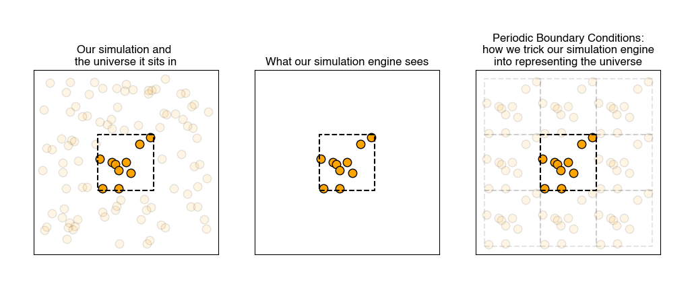

Monte Carlo simulations#
Additional Readings for the Enthusiast#
Frenkel and Smit [2] Ch. 3
Goals for this lecture#
What are periodic boundary conditions? Why do we use them?
How can stochastic sampling be used to replicate a probability distribution?
What are some limitations of random sampling in statistical ensembles?
Interactions in molecular simulations#
Non-bonded potentials#
We ended the last lecture by introducing pairwise non-bonded interactions between particles that are commonly used in molecular simulations. We primarily covered the Lennard-Jones potential, long-range Coulombic potential which account for the van der Waals and electrostatic interactions of our particles.
Interactions in MC simulations#
As a reminder, Monte Carlo simulations can use any potential energy function regardless of whether it is differentiable, expanding the repertoire of possible interactions. In the previous lecture, we covered hard-particle interactions and nearest-neighbor interactions.
Periodic boundary conditions#
A challeng in molecular simulations is defining a represenative system volume, \(V\), because we typically simulate very small volumes relative to physical systems (i.e. box lengths on the order of 10-100 nm in an atomistic or coarse-grained system). In such small box sizes, the interface, or box walls, are substantial, and hence there must be some method for dealing with the behavior of molecules near the walls. If we do not treat the boundaries differently - i.e. if we have a free boundary - then molecules at the edge of the box will interact with vacuum, which may not be intended.
While clearly the volume of a macroscopic system is inaccessible to atomistic simulations, it is still possible to define a simulation volume in which we sample the same ensemble quantities as the macroscale.
Suppose we define the simulation box by three box vectors, \(a, b,\) and \(c\), and by three angles between these vectors, \(\alpha, \beta,\) and \(\gamma\). While these parameters can vary, for our purposes we will assume that the simulation box is cubic, i.e. \(a = b = c = L\) and \(\alpha = \beta = \gamma = 90^\circ\). The most common way of treating the boundary of a simulation box is by imposing
- periodic boundary conditions#
also called PBCs; a simulation practice in which we pretend each side of the simulation box is connected on the opposite side to an identical simulation
Using PBCs is akin to using an infinite set of equivalent simulation boxes that are offset by a box length \(L\) in a given Cartesian direction from the “actual” simulation box. Each of these equivalent simulation boxes have equivalent particles as well with their positions again modified by \(L\) - the particle located at position \(r(x,y,z)\) in the simulation box is mirrored across all of these simulation boxes such that it is the same as the particle at positions \(r(x+L, y, z)\), \(r(x, y+L, z)\), \(r(x, y, z+L)\), and so on. This treatment is analogous to defining the simulation box as a unit cell in an infinitely periodic material: if a particle leaves the box along the negative x-axis, a particle from one of the adjacent simulation boxes immediately re-enters the box along the positive x-axis.

Note that the boundaries of the simulation box themselves have no particular significance. The system is also translationally invariant: all particle positions are shifted uniformly, no system properties would change. If particles interact via pairwise intermolecular potentials (see below), periodic boundary conditions then allows us to write:
Here, \(\textbf{r}^N\) is a vector representing the set of all \(N\) particle positions, \(\textbf{r}_{ij}\) is the (vector) distance between particle \(i\) and \(j\), \(\textbf{n}\) is a vector of 3 arbitrary integers, and \(L\) is the size of the box. The factor of 1/2 eliminates overcounting of pairs of atoms. In other words, each particle can interact with every possible periodic image since the system is infinite. This may not be desirable, so typically interactions use the minimum image convention meaning that the distance used in computing pair potentials is the shortest possible distance between two particles, taking into account periodic boundary conditions. Thus, the distance in any one dimension of the box can never exceed \(L\).
In practice, PBCs are used for the vast majority of simulations, but you must be careful that they do not introduce artifacts, or
- finite size effects#
unphysical artifacts introduced when simulation boundary conditions impose unrealistic constraints on the behavior of a system
This can occur, for example, if the value of \(L\) is small relative to long-wavelength modes of the system, for example, then the presence of PBCs could limit these modes. For example, lipid bilayers, while largely planar, undulate out-of-plane over length scales of hundreds of nanometers; these undulations are often damped in simulations that are too small to properly capture them.
Sampling from a canonical ensemble#
We will now build upon the fundamentals introduced in the last lecture to describe the principles of Monte Carlo simulations.
In general, the goal of a simulation might be to estimate the ensemble average of a quantity which will be denoted as \(Y\). The ensemble-average value of \(Y\) can be obtained readily if we know the partition function for the system. Recall from our study of the Ising model that a general expression for the partition function of a system with \(N\) non-independent particles is:
In this notation, each sum accounts for all possible positions (\(\textbf{r}_i\)) of one of the particles, and the energy of each configuration is a function of all particle positions. The bold notation indicates that \(\textbf{r}_i\) is a vector; in this case a vector with 3 coordinates referring to the x/y/z positions of the particle. We cannot factorize this partition function because the particles are interacting and hence a single-particle partition function cannot be written without knowledge of the positions/states of the other particles. If we now assume that particle positions are continuous, rather than discrete, we can transform our sums to integrals in the classical limit and write the expression as:
Here, each integral runs over some volume which is accessible to each particle in the system since the particle positions have units of length. We simplify the notation by writing the integral over a single vector, \(\textbf{r}^N\), which contains the positions of all \(N\) particles; in three-dimensions, this is then a vector with \(3N\) coordinates, and integrating over all possible positions is equivalent to integrating over a 3N-dimensional volume \(V^N\) which we call the volume of phase space accessible to the \(N\) particles1.
With this new notation, the ensemble average in the classical canonical ensemble (with \(NVT\) fixed) is given as:
This notation mirrors the notation used to sum over all states accessible to a system using a discrete partition function, but here the sum is replaced by an integral over phase space. It is only a notation change, and is conceptually equivalent.
In principle, the integrals in Eq. (22) could be calculated in a brute force manner by determining the value of \(Y(\mathbf{r}^N)\) for every set of particle coordinates and integrating numerically. However, such an approach would be impossible computationally because the number of system configurations becomes effectively infinite for even a small number of particles.
Moreover, it is likely that the vast majority of the system configurations would have a high energy, \(E(\mathbf{r}^N) \gg k_BT\), and as a result the Boltzmann factor for most values of \(Y(\mathbf{r}^N)\) would be zero. In other words, a large portion of the phase space (\(V^N\)) possible for a simulation will be inaccessible due to its high energy - those configurations will be infinitely unlikely. Performing such a calculation would thus be not only nearly impossible, but also highly inefficient.
Finally, the last thing to notice is that to calculate \(\langle Y \rangle\), it is not necessary to calculate the value of the integrals in both the numerator and denominator of Eq. (22); only their ratio must be determined. This observation will form the basis of the Metropolis Monte Carlo algorithm. We will now describe Monte Carlo sampling in general, then discuss the Metropolis algorithm.
Stochastic sampling#
The main idea of the Monte Carlo method is the following: a determinate mathematical expression (like the integrals in the equations for the canonical ensemble) is reformulated as a probablistic analogue and then solved by stochastic sampling.
In reality, we very rarely know the exact formulation of our probability density, and so we can use stochastic sampling to construct an approximation. For example, suppose we have this weirdly shaped object and want to compute its area, and are unable to do so analytically.

This can be likened to computing the average value of a binary function across a space larger than our shape, i.e.,
where \(f\) is 1 when we are sitting in the shape and 0 otherwise, and \(A_{box}\) is the area of our bounding box.
Now, we can calculate the average value of \(f\) by randomly selecting points within our bounding box and recording whether or not we hit our shape.

If we have an infinite number of trials, then we will sample exactly according to \(p(x,y)\) and the average of \(f\) computed from the infinite number of trials will be exactly equal to our area.
where \(\tau\) is our number of trials (samples).
Stochastic sampling of determinate equations#
Consider evaluating a function \(F\) which can be estimated as the integral of some function \(f(x)\) within a defined interval \([a, b]\):
We can then define an arbitrary probability density function, \(p(x)\), which represents the probability of finding any particular value of \(x\). In this case, we assume that the probability density is known for the function of interest. We can then write:
This expression is the ensemble-average of an observable but in the continuum limit - in other words, this is the continuum version of the expression \(\langle Y \rangle = \sum p_i Y_i\) where we have replaced the summation (for discrete states) with an integral and the observable we are computing is \(\left ( \frac{f(x)}{p(x)} \right )\).
Now, we can calculate the average value of \(\left ( \frac{f(x)}{p(x)} \right )\) by randomly selecting points within the interval \([a, b]\) according to the probability distribution \(p(x)\), and calculating \(\left ( \frac{f(x)}{p(x)} \right )\) for each randomly selected value of \(x\). Like with our area example, if we have an infinite number of trials, then each value of \(x\) will be sampled exactly according to \(p(x)\) and the average of \(\left ( \frac{f(x)}{p(x)} \right )\) computed from the infinite number of trials will be exactly equal to the value of the integral above. We can thus approximate \(F\) by:
where for each of the \(\tau\) trials (samples), \(x\) is chosen according to the probability \(p(x)\).
Let’s consider a simple example of how we might apply this idea. First, we will choose \(p(x)\) to be a uniform probability density:
Then, we can generally approximate \(F\) as:
This expression approximates \(F\) by randomly, uniformly sampling values of \(x\) between \(a\) and \(b\), calculating \(f(x)\), and taking the average, with additional values of \(\tau\) increasing the accuracy of our approximation. Of course, for many one-dimensional functions this may not be particularly efficient relative to just performing numerical quadrature, but in a \(N\)-dimensional space, such as the configurational space of the partition function, this type of methodology could be efficient.
Stochastic sampling applied to the canonical partition function#
Let’s consider applying this uniform sampling methodology to the calculation of the canonical partition function. We could write:
\(V^N\) is again the volume of phase space which is the \(3N\)-dimensional analogue to \(A_{box}\) in our previous example; \(\tau\) is the total number of samples used for the approximation, and \(E(\mathbf{r}_i^N)\) is the potential energy of the system for the specific configuration denoted by \(i\).
There are two major problems with this approach in practice. First, it’s difficult to estimate the total phase space volume, \(V^N\). This problem can be avoided, however, by recognizing that calculating the ensemble-average value of an observable requires only the ratio of two quantities within the phase space \(V^N\). So we can write:
We use the notation \(\langle Y\rangle_{NVT}\) as a reminder that the ensemble-average value of \(Y\) is calculated in the canonical ensemble. Due to the ratio, the term involving the total phase space drops out.
But, we are left with a second problem, which is that the vast majority of configurations in most systems will have a near-zero contribution to the ensemble average, since the Boltzmann weight \(\exp \left [-\beta E(\mathbf{r}_i^N)\right ] \approx 0\) for any configurations with unfavorable (high) energies.
For example, consider sampling configurations from a set of hard spheres to represent a fluid - any configuration in which there is slight overlap between spheres leads to an infinite system energy, and the corresponding Boltzmann weight would be zero. Randomly selecting particle positions would thus lead to the vast majority of configurations not contributing to the average, inhibiting an accurate calculation. Instead, we would like to perform importance sampling, by only examining configurations with finite contributions to the ensemble average.